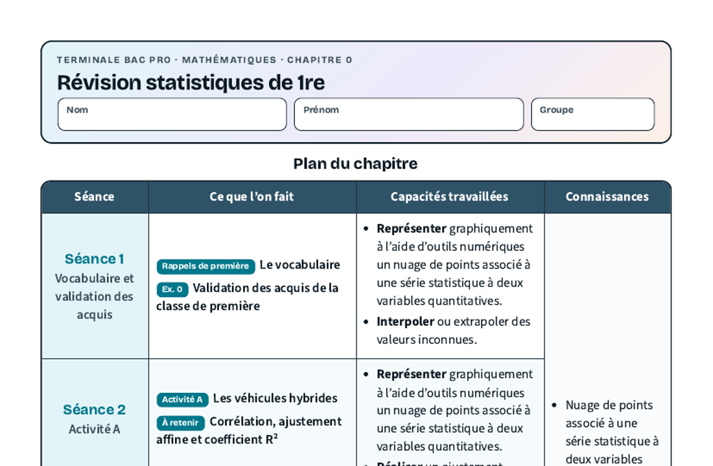
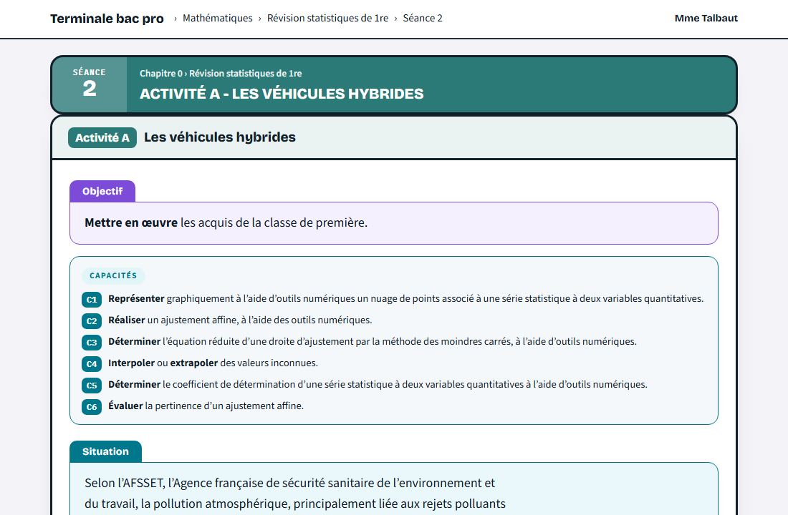
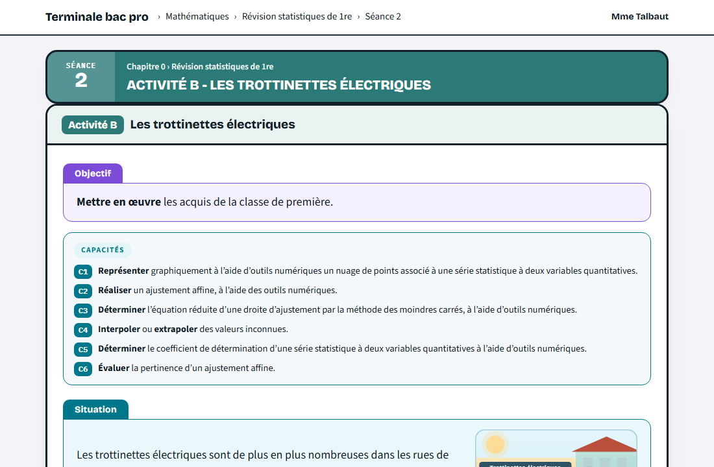

Chapitre 0 · Révision statistiques de 1reLes statistiques à deux variables vues en première, avant le programme de terminale.Changer de chapitre
La fiche de cours

Le plan du chapitre, les rappels de première et les À retenir
À imprimer et à compléter pendant les séances.
Ouvrir la fiche de coursLes séances
Chaque fiche s’ouvre avec le code donné en classe.
Séance 2
Activité A · Les véhicules hybrides

Correction après la séance
La ficheLa correction
Rattrapage
Activité B · Les trottinettes électriques

Correction après la séance
La ficheLa correction
Les fiches tuto NumWorks
Les tutos utilisés dans ce chapitre, à garder sous la main.